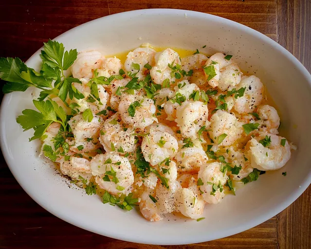

Garlic Shrimp

How To Make Garlic Shrimp
This garlic shrimp is the perfect weeknight meal for busy families. It's quick, easy, and loaded with buttery garlic flavor. Serve over cauliflower rice.
Ingredients
- 1/4 cup butter, divided
- 2 tablespoons chopped garlic
- 1 pound shrimp, peeled and deveined
- 1 tablespoon seafood seasoning (such as Old Bay®)
- 1 tablespoon chopped parsley, or to taste (optional)
- 1 lemon, cut into wedges, or as needed(optional)